<title>Case 04 Storyboard</title>
<meta name="viewport" content="width=device-width,initial-scale=1">
<meta name="claude:viewport-fit-sides" content="cover">
<style>
:root{--bg:#15130f;--card:#201d18;--ink:#ece6da;--mute:#a79f90;--acc:#d9a441;--red:#b8322a;--line:#3a352c;color-scheme:dark}
*{box-sizing:border-box} body{margin:0;background:var(--bg);color:var(--ink);font:16px/1.55 Georgia,"Times New Roman",serif}
main{max-width:1180px;margin:0 auto;padding-block:28px 80px;padding-left:max(16px, env(safe-area-inset-left, 0px));padding-right:max(16px, env(safe-area-inset-right, 0px))}
h1{font:700 32px/1.15 Georgia,serif;margin:0 0 6px;text-wrap:balance} .sub{color:var(--mute);margin:0 0 18px}
video{width:100%;max-width:100%;border-radius:8px;background:#000;display:block;aspect-ratio:16/9}
.note{background:#2a2419;border-left:4px solid var(--acc);padding:14px 18px;margin:18px 0 28px;border-radius:4px;font-size:15px;display:flex;flex-direction:column;gap:10px}
.note p{margin:0}
.beat{background:var(--card);border-radius:10px;padding:18px;margin:0 0 22px} .beat header{display:flex;gap:12px;align-items:baseline;flex-wrap:wrap}
.num{background:var(--red);color:#fff;font:700 14px system-ui,sans-serif;padding:3px 8px;border-radius:4px} h2{margin:0;font-size:21px;flex:1;min-width:12ch} .tc{color:var(--mute);font:14px ui-monospace,monospace}
.stills{display:grid;grid-template-columns:repeat(auto-fit,minmax(min(100%,240px),1fr));gap:10px;margin:14px 0} .stills figure{margin:0} .stills img{width:100%;border-radius:6px;display:block}
.stills figcaption{color:var(--mute);font:13px ui-monospace,monospace;margin-top:4px}
.cols{display:grid;grid-template-columns:1fr 1fr;gap:22px} .cols>div{min-width:0} @media(max-width:760px){.cols{grid-template-columns:1fr}}
h3{font:700 12px system-ui,sans-serif;letter-spacing:.08em;text-transform:uppercase;color:var(--acc);margin:6px 0} .vo{padding-left:20px;margin:0} .vo li{margin:3px 0} .vo .none{list-style:none;margin-left:-20px;color:var(--mute)} p{margin:0}
.snd{list-style:none;padding:0;margin:0} .snd li{display:flex;align-items:center;gap:10px;margin:5px 0;flex-wrap:wrap} .snd span{min-width:170px;color:var(--mute);font-size:14px}
audio{height:30px;max-width:100%}
</style>
<main>
<h1>Case No. 04: Three Crore Names (Sahara)</h1>
<p class="sub">Cold open · &quot;127 Trucks&quot; · storyboard build, 2026-11-10 · for your approval</p>
<video controls preload="metadata" src="video/open_storyboard_720p.mp4"></video>
<div class="note">
<p>This animatic follows the approved script. The <b>planned narration is shown as on-screen text</b> (the "VO (storyboard)" band), with <b>scratch music and sound effects only</b>. There's no voice yet: Chatterbox records it after you approve, and the picture and sound are then re-timed to the real spoken words. The frames are at 12 fps for the storyboard; the final render is 24 fps.</p>
<p>The whole cold open sits at dial 75: night, sepia newsprint. The forms, the red stamps and the tail lights stay in colour, as the accents, because the names are the point. Part 1 opens bright (dial 0) in Gorakhpur, 1978.</p>
<p>Every staged scene carries DRAMATIZATION. No logos, no likenesses: the building has no sign, the people are generic paper puppets, and the form's photo box is empty.</p>
<p><b>Your approval, please (reply in chat):</b> keep the cold open as it is, or note changes per beat (for example "0.4: pull back slower").</p>
</div>
<section class="beat"><header><span class="num">0.1</span><h2>The street, in the rain</h2><span class="tc">0:00.0–0:07.5</span></header>
<div class="stills"><figure>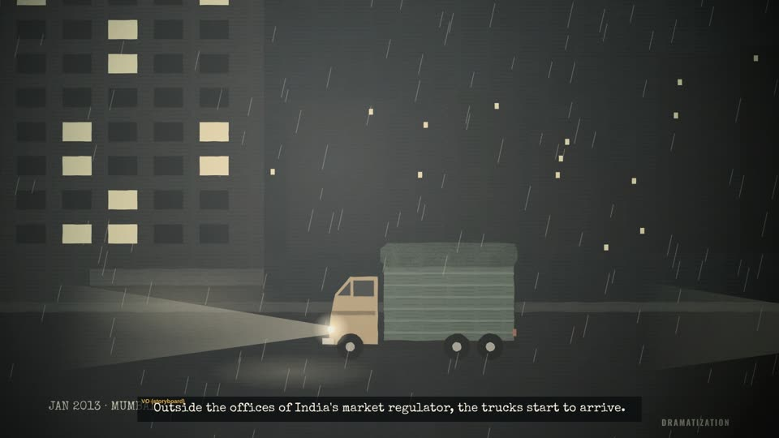<figcaption>0:03.0</figcaption></figure><figure>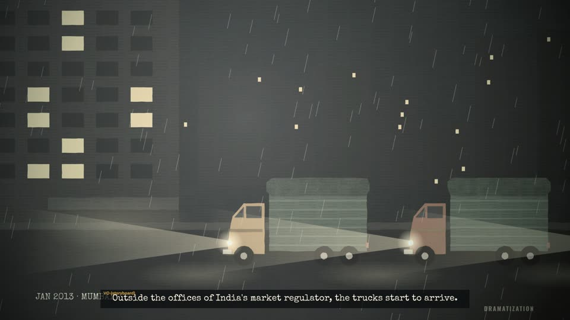<figcaption>0:06.5</figcaption></figure></div><div class="cols"><div><h3>Narration (planned)</h3><ol class="vo"><li>January, twenty thirteen. Mumbai.</li><li>Outside the offices of India&#x27;s market regulator, the trucks start to arrive.</li></ol></div>
<div><h3>Picture</h3><p>Night in Mumbai, heavy rain. A dark office building with a few lit windows, no sign or logo. Goods lorries pull in one after another, headlights on, and stop in a queue. Typewritten: JAN 2013 · MUMBAI. DRAMATIZATION in the corner.</p><h3>Sound (scratch)</h3><ul class="snd"><li><span>rain heavy (music / ambience)</span><audio controls preload="none" src="sfx/b2_rain_heavy.mp3"></audio></li><li><span>ambient mystery 01 (music / ambience)</span><audio controls preload="none" src="sfx/ambient_mystery_01.mp3"></audio></li><li><span>truck pass a</span><audio controls preload="none" src="sfx/b2_truck_pass_a.mp3"></audio></li><li><span>truck pass b</span><audio controls preload="none" src="sfx/b2_truck_pass_b.mp3"></audio></li><li><span>truck pass a</span><audio controls preload="none" src="sfx/b2_truck_pass_a.mp3"></audio></li></ul></div></div></section><section class="beat"><header><span class="num">0.2</span><h2>One pair of lights after another</h2><span class="tc">0:07.5–0:11.9</span></header>
<div class="stills"><figure>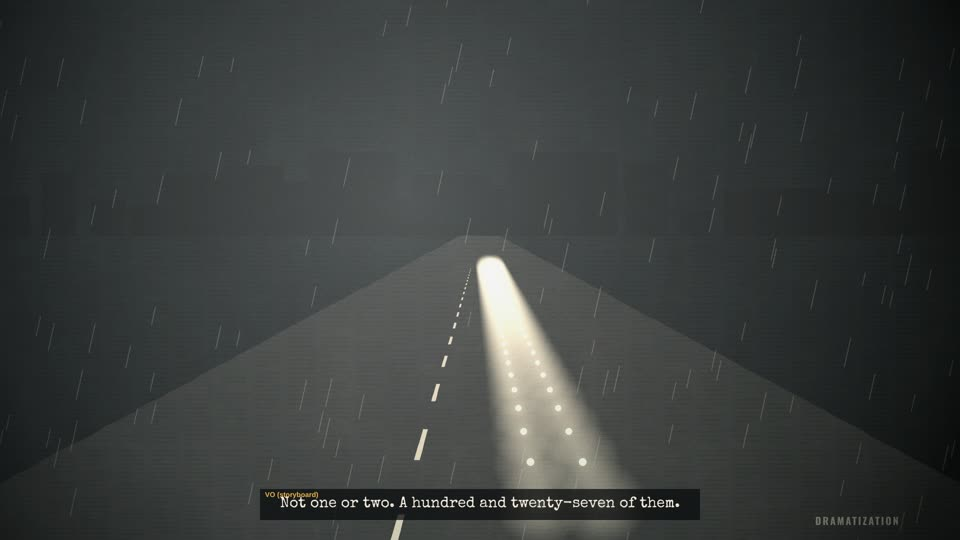<figcaption>0:09.0</figcaption></figure><figure>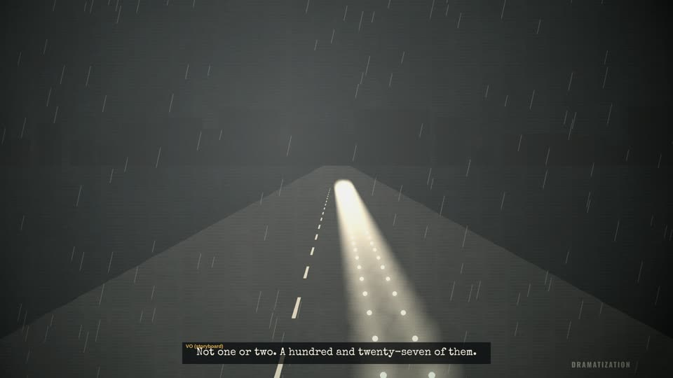<figcaption>0:11.0</figcaption></figure></div><div class="cols"><div><h3>Narration (planned)</h3><ol class="vo"><li>Not one or two. A hundred and twenty-seven of them.</li></ol></div>
<div><h3>Picture</h3><p>High and wide: the road runs to the horizon and headlights keep coming down it, pair after pair. &quot;A hundred and twenty-seven of them.&quot;</p><h3>Sound (scratch)</h3><ul class="snd"><li><span>rain heavy (music / ambience)</span><audio controls preload="none" src="sfx/b2_rain_heavy.mp3"></audio></li><li><span>ambient mystery 01 (music / ambience)</span><audio controls preload="none" src="sfx/ambient_mystery_01.mp3"></audio></li><li><span>truck pass b</span><audio controls preload="none" src="sfx/b2_truck_pass_b.mp3"></audio></li></ul></div></div></section><section class="beat"><header><span class="num">0.3</span><h2>The shutter</h2><span class="tc">0:11.9–0:19.4</span></header>
<div class="stills"><figure>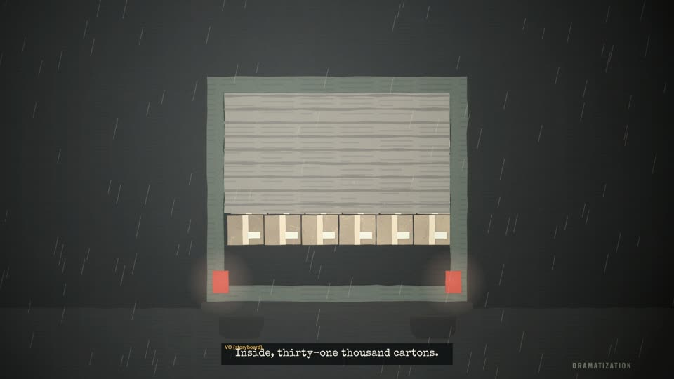<figcaption>0:12.6</figcaption></figure><figure>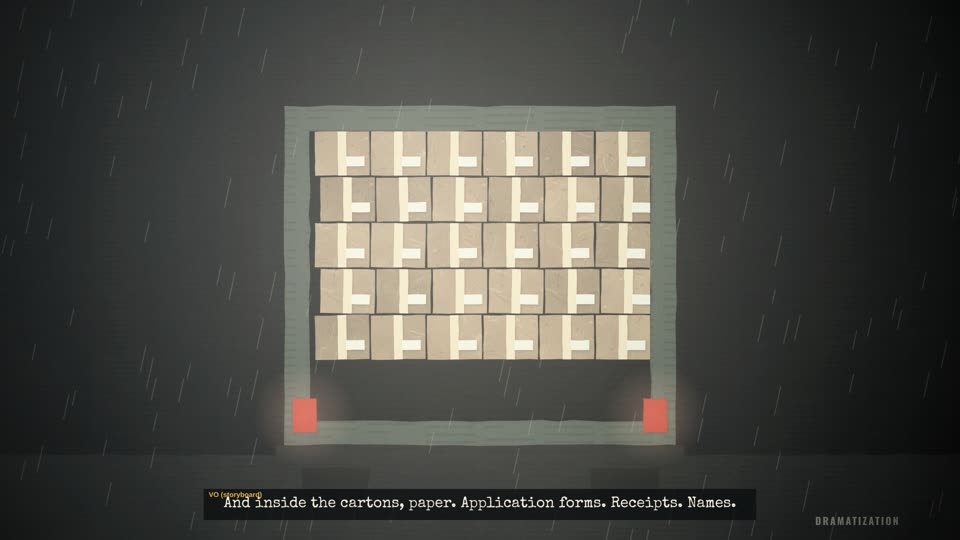<figcaption>0:14.5</figcaption></figure><figure>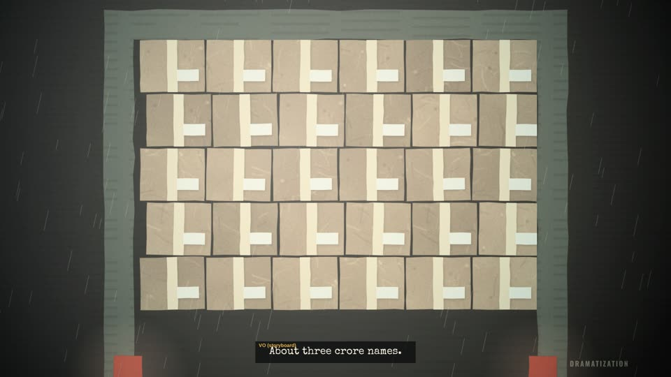<figcaption>0:18.5</figcaption></figure></div><div class="cols"><div><h3>Narration (planned)</h3><ol class="vo"><li>Inside, thirty-one thousand cartons.</li><li>And inside the cartons, paper. Application forms. Receipts. Names.</li><li>About three crore names.</li></ol></div>
<div><h3>Picture</h3><p>Behind one lorry, tail lights red in the rain. The shutter rolls up: cartons, floor to roof. The camera pushes slowly into the wall of boxes.</p><h3>Sound (scratch)</h3><ul class="snd"><li><span>rain heavy (music / ambience)</span><audio controls preload="none" src="sfx/b2_rain_heavy.mp3"></audio></li><li><span>rain heavy (music / ambience)</span><audio controls preload="none" src="sfx/b2_rain_heavy.mp3"></audio></li><li><span>ambient mystery 01 (music / ambience)</span><audio controls preload="none" src="sfx/ambient_mystery_01.mp3"></audio></li><li><span>metalLatch</span><audio controls preload="none" src="sfx/metalLatch.ogg"></audio></li><li><span>microfiche scroll a</span><audio controls preload="none" src="sfx/b5_microfiche_scroll_a.mp3"></audio></li><li><span>box open a</span><audio controls preload="none" src="sfx/b2_box_open_a.mp3"></audio></li></ul></div></div></section><section class="beat"><header><span class="num">0.4</span><h2>One form</h2><span class="tc">0:19.4–0:30.8</span></header>
<div class="stills"><figure>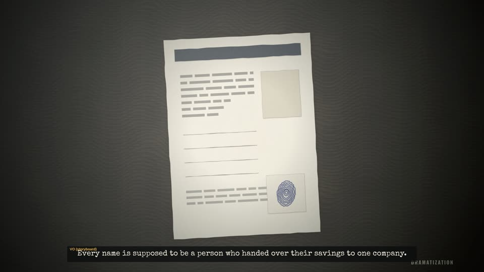<figcaption>0:21.5</figcaption></figure><figure>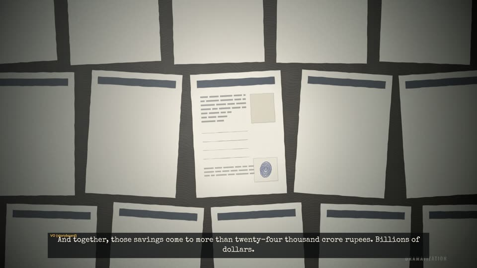<figcaption>0:27.5</figcaption></figure><figure>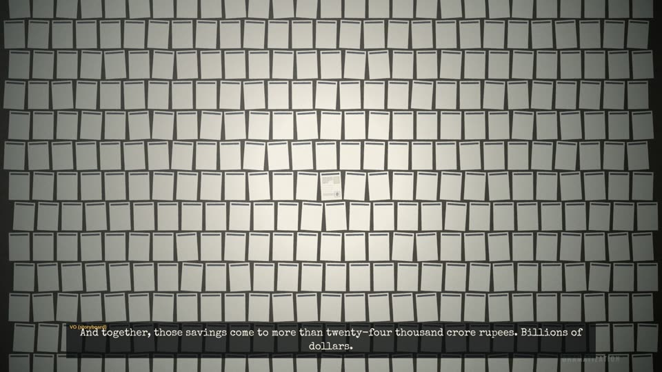<figcaption>0:30.2</figcaption></figure></div><div class="cols"><div><h3>Narration (planned)</h3><ol class="vo"><li>Every name is supposed to be a person who handed over their savings to one company.</li><li>And together, those savings come to more than twenty-four thousand crore rupees. Billions of dollars.</li></ol></div>
<div><h3>Picture</h3><p>One application form slides onto a desk: lines of writing, an empty photo box (no face), a thumbprint in blue ink. On &quot;and together…&quot; the camera pulls back and back: it is one form among thousands, a whole floor of them.</p><h3>Sound (scratch)</h3><ul class="snd"><li><span>rain heavy (music / ambience)</span><audio controls preload="none" src="sfx/b2_rain_heavy.mp3"></audio></li><li><span>ambient mystery 01 (music / ambience)</span><audio controls preload="none" src="sfx/ambient_mystery_01.mp3"></audio></li><li><span>paper slide a</span><audio controls preload="none" src="sfx/b2_paper_slide_a.mp3"></audio></li></ul></div></div></section><section class="beat"><header><span class="num">0.5</span><h2>The warehouse</h2><span class="tc">0:30.8–0:41.5</span></header>
<div class="stills"><figure>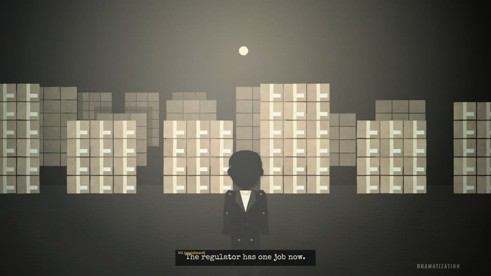<figcaption>0:32.5</figcaption></figure><figure>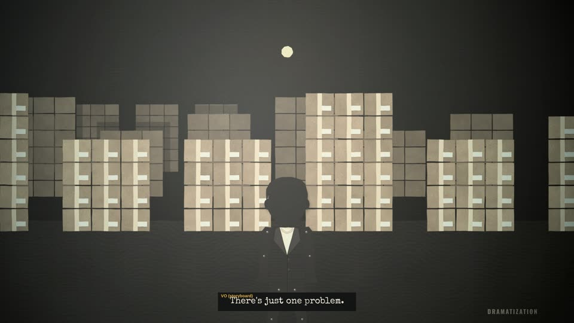<figcaption>0:38.3</figcaption></figure></div><div class="cols"><div><h3>Narration (planned)</h3><ol class="vo"><li>The regulator has one job now.</li><li>Find these people. Give them their money back.</li><li>There&#x27;s just one problem.</li></ol></div>
<div><h3>Picture</h3><p>A warehouse of carton stacks under a single swinging bulb. A regulator official, seen from behind, faces it. Silence. On &quot;There&#x27;s just one problem&quot; the bulb flickers, with one low hit.</p><h3>Sound (scratch)</h3><ul class="snd"><li><span>ambient mystery 01 (music / ambience)</span><audio controls preload="none" src="sfx/ambient_mystery_01.mp3"></audio></li><li><span>office roomtone (music / ambience)</span><audio controls preload="none" src="sfx/s1_office_roomtone.mp3"></audio></li><li><span>tension drone (music / ambience)</span><audio controls preload="none" src="sfx/b2_tension_drone.mp3"></audio></li><li><span>impactSoft heavy 002</span><audio controls preload="none" src="sfx/impactSoft_heavy_002.ogg"></audio></li></ul></div></div></section><section class="beat"><header><span class="num">0.6</span><h2>Returned</h2><span class="tc">0:41.5–0:45.5</span></header>
<div class="stills"><figure>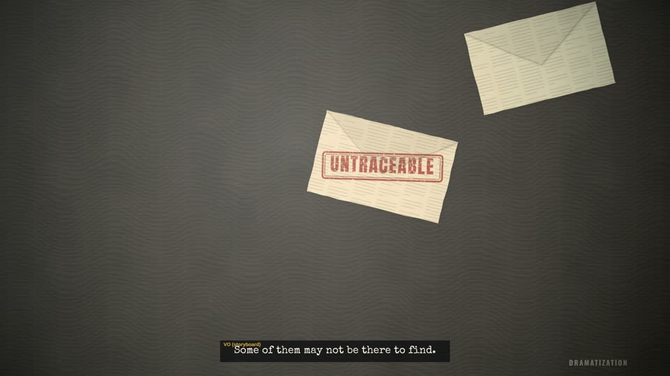<figcaption>0:42.6</figcaption></figure><figure>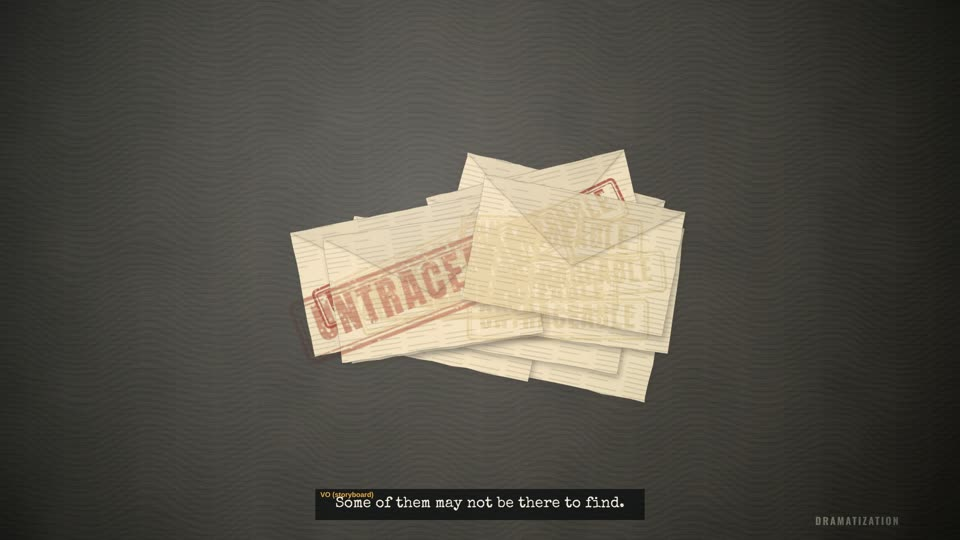<figcaption>0:45.2</figcaption></figure></div><div class="cols"><div><h3>Narration (planned)</h3><ol class="vo"><li>Some of them may not be there to find.</li></ol></div>
<div><h3>Picture</h3><p>Envelopes slide back across a desk, one after another and faster, each stamped UNTRACEABLE in red, until they pile up.</p><h3>Sound (scratch)</h3><ul class="snd"><li><span>office roomtone (music / ambience)</span><audio controls preload="none" src="sfx/s1_office_roomtone.mp3"></audio></li><li><span>tension drone (music / ambience)</span><audio controls preload="none" src="sfx/b2_tension_drone.mp3"></audio></li><li><span>tension 02 (music / ambience)</span><audio controls preload="none" src="sfx/tension_02.mp3"></audio></li><li><span>stamp press a</span><audio controls preload="none" src="sfx/b2_stamp_press_a.mp3"></audio></li><li><span>stamp press b</span><audio controls preload="none" src="sfx/b2_stamp_press_b.mp3"></audio></li><li><span>stamp press a</span><audio controls preload="none" src="sfx/b2_stamp_press_a.mp3"></audio></li><li><span>stamp press b</span><audio controls preload="none" src="sfx/b2_stamp_press_b.mp3"></audio></li></ul></div></div></section><section class="beat"><header><span class="num">0.7</span><h2>A palace… a prison… an account</h2><span class="tc">0:45.5–0:56.3</span></header>
<div class="stills"><figure>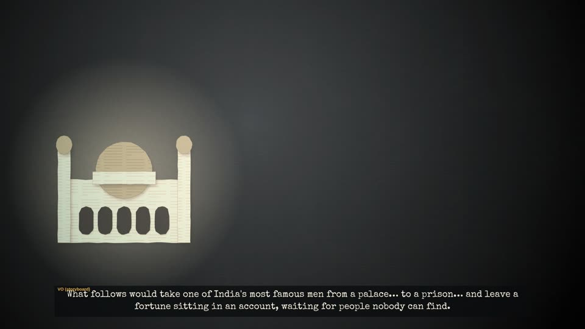<figcaption>0:50.2</figcaption></figure><figure>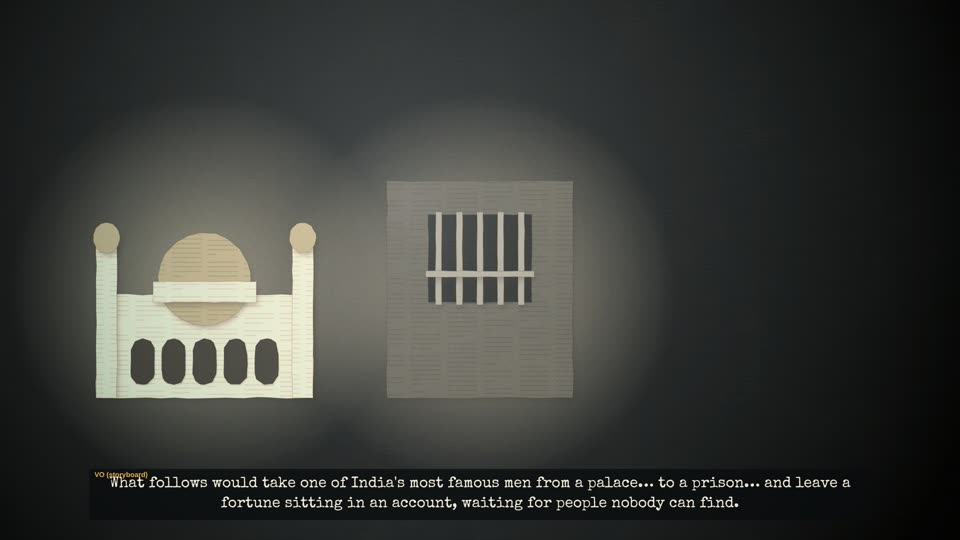<figcaption>0:51.4</figcaption></figure><figure>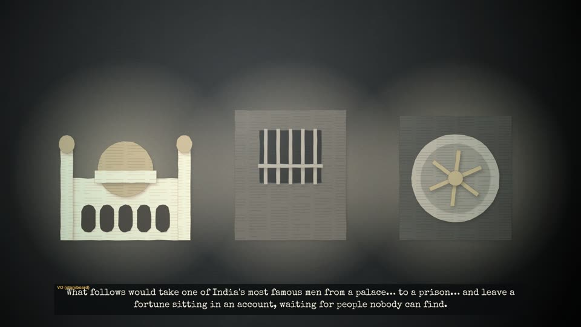<figcaption>0:55.0</figcaption></figure></div><div class="cols"><div><h3>Narration (planned)</h3><ol class="vo"><li>What follows would take one of India&#x27;s most famous men from a palace… to a prison… and leave a fortune sitting in an account, waiting for people nobody can find.</li></ol></div>
<div><h3>Picture</h3><p>Black. Three spotlights come up one at a time on the words: a palace with a gold dome, a barred prison window, a vault door whose wheel starts to turn.</p><h3>Sound (scratch)</h3><ul class="snd"><li><span>office roomtone (music / ambience)</span><audio controls preload="none" src="sfx/s1_office_roomtone.mp3"></audio></li><li><span>tension drone (music / ambience)</span><audio controls preload="none" src="sfx/b2_tension_drone.mp3"></audio></li><li><span>tension 02 (music / ambience)</span><audio controls preload="none" src="sfx/tension_02.mp3"></audio></li><li><span>thud soft a</span><audio controls preload="none" src="sfx/b2_thud_soft_a.mp3"></audio></li><li><span>thud soft a</span><audio controls preload="none" src="sfx/b2_thud_soft_a.mp3"></audio></li><li><span>thud soft a</span><audio controls preload="none" src="sfx/b2_thud_soft_a.mp3"></audio></li></ul></div></div></section><section class="beat"><header><span class="num">0.8</span><h2>Title</h2><span class="tc">0:56.3–1:05.0</span></header>
<div class="stills"><figure>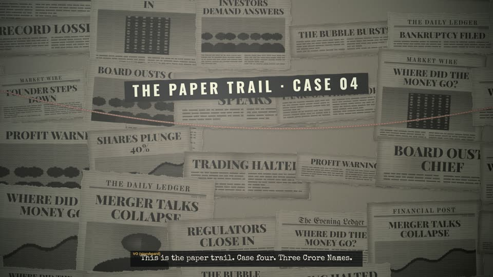<figcaption>0:57.5</figcaption></figure><figure>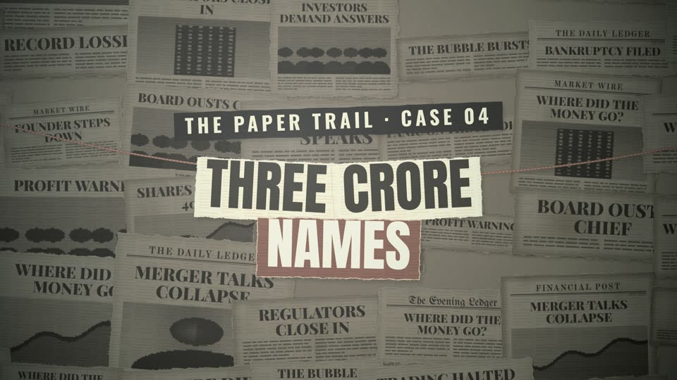<figcaption>1:00.5</figcaption></figure></div><div class="cols"><div><h3>Narration (planned)</h3><ol class="vo"><li>This is the paper trail. Case four. Three Crore Names.</li></ol></div>
<div><h3>Picture</h3><p>A torn reveal onto the clipping wall and red string: THE PAPER TRAIL · CASE 04, then THREE CRORE NAMES, with NAMES highlighted.</p><h3>Sound (scratch)</h3><ul class="snd"><li><span>tension 02 (music / ambience)</span><audio controls preload="none" src="sfx/tension_02.mp3"></audio></li><li><span>paper tear b</span><audio controls preload="none" src="sfx/b2_paper_tear_b.mp3"></audio></li><li><span>paper slam a</span><audio controls preload="none" src="sfx/b2_paper_slam_a.mp3"></audio></li></ul></div></div></section>
</main>